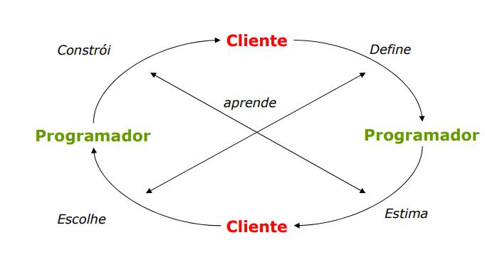

Resultados
Durante esta sprint foram decididos os seguintes items:
-
Scrum Master
- Ficou decido que Marcelo Magalhães será o Scrum Master.
-
Horario do daily meeting
- Foi decidido que o daily meeting acontecerá sempre as 13:00.
-
Dia e horario da sprint planning
- Foi decidido que o sprint planning acontecerá toda segunda-feira das 12:00 as 14:00.
- Dia e horario da sprint review
- Foi decidido que o sprint review acontecerá aos sábados.
Quadro de conhecimentos
Atividade relativa a adquirir conhecimento a cerca das metodologias de desenvolvimento xp, scrum, tecnologias de desenvolviemnto e exibir em forma de tabela.
| Membros | Git | HTML | CSS | Python3 | Django | SQL (Postgree) | Bootstrap |
|---|---|---|---|---|---|---|---|
| Aline Laureano de Araújo Vilela | :( | :D | :D | :( | :( | :) | :( |
| Felipe | :) | :( | :( | :) | :( | :( | :( |
| Luís Cláudio Telles Lima | :) | :( | :( | :( | :( | :( | :( |
| Marcelo Ferreira Magalhães Júnior | :( | :( | :( | :( | :( | :( | :( |
| Milton Juliano da Silva Júnior | :( | :( | :( | :( | :( | :( | :( |
| William Elias Alves | :) | :) | :) | :( | :( | :( | :( |
Legenda | Ruim - :( | Bom - :) | Ótimo - :D ------- | ------- | ------- | ------- |
Resumo de tecnologias ágeis
Scrum
É um framework leve, de simples entendimento e difícil de adquirir domínio.
Destinado a desenvolver, manter e entregar produtos de alta complexidade, o scrum substitui algoritmos programados pela construção de uma visão heurística. Com ele o trabalho será otimizado e haverá uma maior possibilidade de uma entrega diferenciável, pois você pode incrementá-lo com distintos processos ou técnicas. Por possuir uma abordagem de iteração e incremento ao longo dos processos em que é aplicado, o scrum tem uma base forte no que diz respeito ao gerenciamento e melhora contínua de projetos e de uma forma empírica, facilita a mitigação e controle de possíveis problemas e facilitando a gestão de riscos.
Por ser parte de um processo empírico, o scrum se baseia em três pilares:
Transparência : Deve existir uma compreensão igual a respeito do que está sendo trabalhado, todos os observadores devem possuir visões com aspectos em comum a respeito do que é visto.
Inspeção: Por prezar a continuidade, quem utiliza o scrum deve corriqueiramente inspecionar os processos ou etapas em que se encontram, buscando encontrar irregularidades ou possíveis melhoras
Adaptação: Deve-se prezar pela identificação de resultados fora da curva de aceitação, para que esses sejam corrigidos ou adequados da melhor forma a obter os resultados desejados.
Valores:
São valores do scrum o comprometimento, a coragem, o foco, a transparência e o respeito e esses devem ser agregados aos pilares acima citados para que exista uma homogeneidade no time que traga uma ótima vivência e maior confiança para todos.
Time Scrum
O time scrum deve ser auto-organizável objetivando a melhor execução das tarefas delegadas, o time é modelado de uma forma a obter maior flexibilidade, criatividade e produtividade. O Time deve buscar cada vez mais a independência em relação pessoas externas, ou seja devem buscar o autodidatismo e auxílio mútuo para a solidificação de uma equipe uniforme.
Product Owner: É o responsável pela gerência do Backlog do produto, dando um norte a respeito do que será feito em relação aos itens do Backlog do Produto para se alcançar da melhor forma as metas e missões propostas, além de ser responsável por otimizar o valor do trabalho que o Time de desenvolvimento realiza, Garantir que o Backlog do Produto seja visível, transparente, claro para todos, e mostrar o que o Time Scrum vai trabalhar a seguir; e, Garantir que o Time de Desenvolvimento entenda os itens do Backlog do Produto no nível necessário.
O Time de Desenvolvimento
O Time de Desenvolvimento é composto por membros/profissionais que efetuam o trabalho de entregar um produto estável no fim de uma sprint. Os Times de Desenvolvimento devem ter autossuficiência e complementabilidade para que exista uma sinergia necessária para execução de um bom trabalho individualmente e em grupo.
Distribuição dos Papéis
| Nome | Configurar Ambiente |
Adquirir Conhecimento Acerca da Metodologia de Desenvolvimento |
Definir Horário dos Rituais |
Definir Papéis do Time Scrum |
Levantar Requisitos |
|---|---|---|---|---|---|
| Aline Laureano de Araújo Vilela | ✔ |
✔ |
✔ |
||
| Felipe | ✔ |
✔ |
✔ |
||
| Luís Cláudio Telles Lima | ✔ |
✔ |
✔ |
||
| Marcelo Ferreira Magalhães Júnior | ✔ |
✔ |
✔ |
||
| Milton Juliano da Silva Júnior | ✔ |
✔ |
✔ |
||
| William Elias Alves | ✔ |
✔ |
✔ |
Scrum Master
De uma forma geral e sucinta, o Scrum Master é intermediador da equipe para com a teoria, as práticas e as regras do Scrum.
Eventos ou Ritos Scrum
Os ritos ou eventos do Scrum servem para criar regularidades e minimizar a necessidade de reuniões de última hora e todos esses ritos são definidos com horários específicos.
Sprint
é o período total necessário para a produção e concepção de um produto funcional, podendo ser considerada potencialmente um projeto. Ela deve conter um planejamento, reuniões diárias, revisões, retrospectivas e tem a característica de poderem ser canceladas.
Sprint Planning
É uma parte essencial para o desencadeamento de toda a sprint, pois é nesse momento que há uma abordagem para identificar possíveis desafios, mitigá-los se possível e serve principalmente para definir como será a entrega do produto e como o trabalho será realizado.
Daily Meeting
Deve se tornar um hábito, pois é um evento que ocorrerá todos os dias da sprint. Com a duração de 15 minutos, a Daily Meeting é uma reunião que serve para verificar como é que está o andamento da sprint e isso é verificado por meio das respostas das seguintes perguntas:
-
O que eu fiz até momento que auxilie o time de desenvolvimento a alcançar a consumação da sprint?
-
O que farei nas próximas 24 horas para auxiliar o time a atingir os respectivos alvos?
-
Que obstáculo foi encontrado até o momento ?
Fica a critério da equipe, mas comumente o time de desenvolvimento permanece na reunião após esses 15 minutos, normalmente para sanar os problemas encontrados ou verificar possíveis adaptações.
Sprint Review
Realizada no final da Sprint, a Sprint Review serve para verificar o que foi obtido se necessário adaptar o Backlog do Produto . No período de revisão, o Time Scrum e as partes interessadas colaboram sobre o que foi feito na Sprint. Com base nisso e em qualquer mudança no Backlog do Produto durante a Sprint, os participantes colaboram nas próximas coisas que podem ser feitas para otimizar valor. Normalmente essa reunião tem a duração de 4 horas, isso para uma Sprint de um mês.
Sprint Retrospective
Realizada após a sprint review e antes do planejamento da sprint, a sprint retrospective é uma chance para o Time Scrum inspecionar a si próprio e criar um plano para melhorias a serem aplicadas na próxima Sprint. Ela serve, de uma forma geral, para inspecionar como a última Sprint foi em relação às pessoas, aos relacionamentos, aos processos e às ferramentas, realizar uma identificação e ordenação dos principais itens e as potenciais melhorias; e por fim criar um plano para implementar melhorias
Os artefatos
Os artefatos do Scrum representam o trabalho ou o valor para o fornecimento de transparência e oportunidades para inspeção e adaptação.
Product Backlog
O Product Backlog é lista ordenada do que o produto conterá, como já dito antes o Product Owner é responsável por isso. Como o esse artefato é diretamente relacionado com os requisitos do sistema, deve ser incrementado ao caminhar das sprints para que possa ser obtido um produto de acordo com as necessidades do cliente.
Sprint Backlog
O Backlog da Sprint é um grupo de itens do Backlog do Produto selecionados para a Sprint, junto com o que será entregue do produto da Sprint. O Backlog da Sprint é a previsão do Time de Desenvolvimento sobre qual funcionalidade estará no próximo incremento e sobre o trabalho necessário para entregar essa funcionalidade em um incremento “Pronto”. O Backlog da Sprint torna visível todo o trabalho que o Time de Desenvolvimento identifica como necessário para atingir o objetivo da Sprint. Para garantir melhoria contínua, é incluído no mínimo um item de prioridade alta sobre melhoria do processo identificado na última Reunião de Retrospectiva.
Increment
É tido como o que é obtido do Backlog do Produto completados durante a Sprint e o valor dos incrementos de todas as Sprints anteriores. No fim da Sprint um incremento deve estar finalizado. E serve para inspecionar o trabalho considerado pronto no final da sprint. O incremento é um passo na direção de uma visão ou de um objetivo. O incremento deve estar na condição de ser utilizado independente do Product Owner decidir por liberá-lo ou não.
EXTREMING PROGRAMING
O Extreme Programming é um método de desenvolvimento de software, criado em 1996, por Kent Bech, no Departamento de Computação da montadora de carros Daimler Crysler, ele possui muitas diferenças em relação a outros modelos, podendo ser aplicado a projetos de alto risco e com requisitos dinâmicos. O objetivo principal do XP é levar ao extremo um conjunto de práticas que são ditas como boas na engenharia de software.
- Já que testar é bom, que todos testem o tempo todo;
- Já que revisão é bom, que se revise o tempo todo;
- Se projetar é bom, então refatorar o tempo todo;
- Se teste de integração é bom, então que se integre o tempo todo;
- Se simplicidade é bom, desenvolva uma solução não apenas que funcione, mas que seja a mais simples possível;
- Se iterações curtas é bom, então mantenha-as realmente curtas; Portanto, como podemos notar todas as coisas boas são levadas ao extremo no XP.
PRINCÍPIOS BÁSICOS
Ele procura fundamentar as suas práticas por um conjunto de princípios:
- Comunicação
- Simplicidade
- Feedback rápido
- Mudanças incrementais
- Abraçar mudanças
- Trabalho de qualidade
- Coragem
- Respeito
PRÁTICAS
Jogo de Planeamento: O desenvolvimento é feito em iterações semanais. No início da semana, desenvolvedores e cliente reúnem-se para priorizar as funcionalidades. Nela, o cliente identifica prioridades e os desenvolvedores as estimam. O cliente é essencial neste processo e, assim, ele fica sabendo o que está acontecendo e o que vai acontecer no projeto. Como o escopo é reavaliado semanalmente, o projeto é regido por um contrato de escopo negociável. Ao final de cada semana, o cliente recebe novas funcionalidades, completamente testadas e prontas para serem colocadas em produção.
Pequenas Versões: A liberação de pequenas versões funcionais do projecto auxilia muito no processo de aceitação por parte do cliente, que já pode testar uma parte do sistema que está comprando.
Metáfora: Procurar facilitar a comunicação com o cliente, entendendo a realidade dele. É preciso traduzir as palavras do cliente para o significado que esperado para a equipe desenvolvedora do projeto.
Projeto Simples: Projeto simples significa dizer que caso o cliente tenha pedido que na primeira versão apenas o usuário "teste" possa entrar no sistema com a senha "123" e assim ter acesso a todo o sistema, você vai fazer o código exato para que esta funcionalidade seja implementada, sem se preocupar com sistemas de autenticação e restrições de acesso. Um erro comum ao adotar essa prática é a confusão por parte dos programadores de código simples e código fácil. Esse entendimento é fundamental para o bom andamento do XP. Código fácil deve ser identificado e substituído por código simples.
Time Coeso: A equipe de desenvolvimento é formada pelo cliente e pela equipe de desenvolvimento.
Testes de Aceitação: São testes construídos pelo cliente em conjunto com analistas e testadores, para aceitar um determinado requisito do sistema.
Ritmo Sustentável: Trabalhar com qualidade, buscando ter ritmo de trabalho saudável. Horas extras são permitidas quando trouxerem produtividade para a execução do projeto.
Posse Coletiva: O código fonte não tem dono e ninguém precisa ter permissão concedida para poder modificar o mesmo. O objetivo com isto é fazer a equipe conhecer todas as partes do sistema.
Programação em Pares: é a programação em dupla num único computador. Geralmente a dupla é criada com alguém sendo iniciado na liguagem e a outra pessoa funcionando como um instrutor. Como é apenas um computador, o novato é que fica à frente fazendo a codificação, e o instrutor acompanha ajudando a desenvolver suas habilidades. Dessa forma o programa sempre é revisto por duas pessoas, evitando e diminuindo assim a possibilidade de erros (bugs).Com isto, procura-se sempre a evolução da equipe, melhorando a qualidade do código fonte gerado.
Padrões de Codificação: A equipe de desenvolvimento precisa estabelecer regras para programar e todos devem seguir estas regras. Dessa forma parecerá que todo o código fonte foi editado pela mesma pessoa.
Desenvolvimento Orientado a Testes: Primeiro crie os testes unitários (unit tests) e depois crie o código para que os testes funcionem. Esta abordagem é complexa no início, pois vai contra o processo de desenvolvimento de muitos anos. Só que os testes unitários são essenciais para que a qualidade do projeto seja mantida.
Refatoração: É um processo que permite a melhoria contínua da programação, com o mínimo de introdução de erros e mantendo a compatibilidade com o código já existente. Refatorizar melhora a leitura do código, dividindo-o em módulos mais coesos e de maior reaproveitamento, evitando a duplicaçao de código-fonte.
Integração Contínua: Sempre que realizar uma nova funcionalidade, nunca esperar uma semana para integrar na versão atual do sistema. Isto só aumenta a possibilidade de conflitos e a possibilidade de erros no código fonte. Integrar de forma contínua permite saber o status real da programação.
Ciclo de Vida 
Fontes:
http://intranet.fainam.edu.br/acesso_site/fia/academos/revista3/6.pdf
https://www.devmedia.com.br/introducao-ao-extreme-programming-xp/29249
Guia Scrum: http://www.scrumguides.org/docs/scrumguide/v2017/2017-Scrum-Guide-Portuguese-Brazilian.pdf